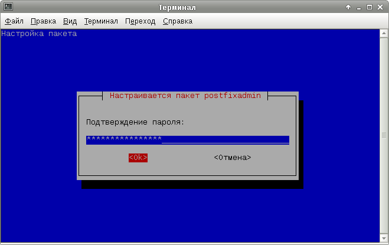
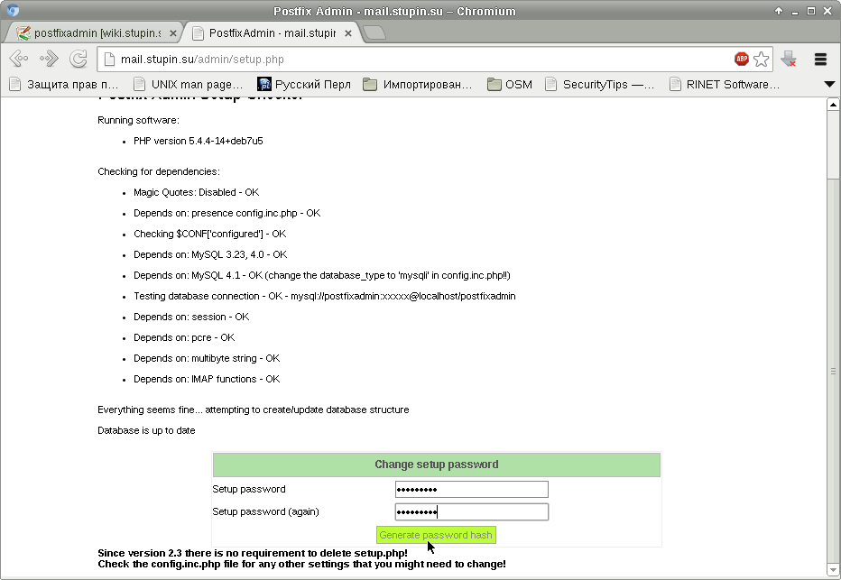
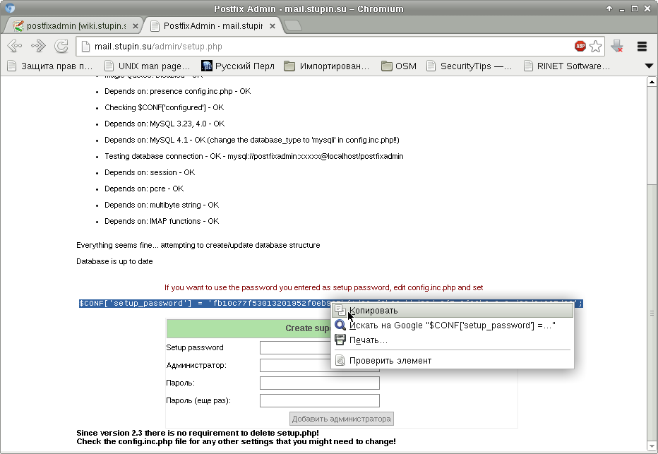
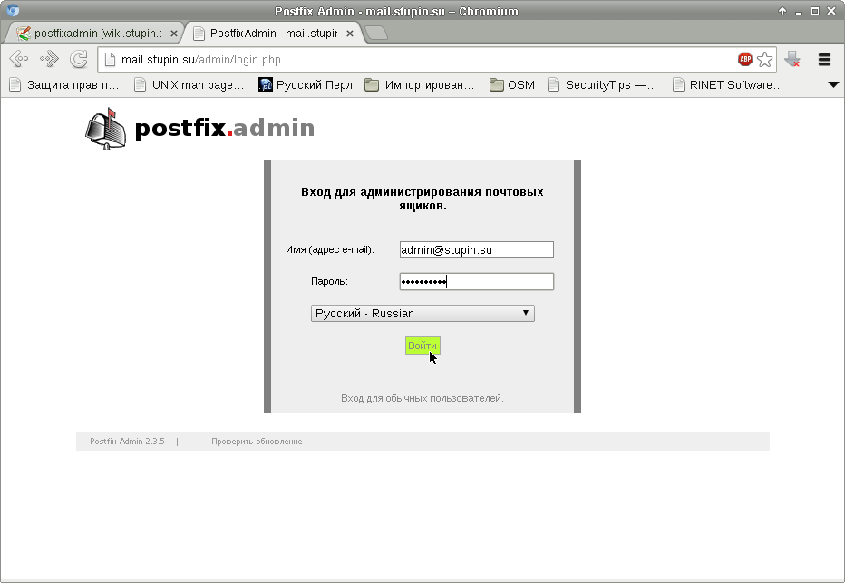

Ранее я уже описывал настройку почтовой системы, использующей Postfixadmin в качестве веб-интерфейса для её администрирования: Настройка почтовой системы на основе Postfix, Dovecot, PostfixAdmin.
Тогда я просто скомпилировал свою заметку из различных рецептов, которые мне больше всего понравились. Сейчас я вижу в той заметке достаточное количество недостатков. Например, в той заметке настраивается SASL через плагин auxprop из Cyrrus, хотя Postfix может использовать SASL, встроенный в Dovecot. Для фильтрации спама по серым спискам был выбран Postgrey, просто потому что он был тогда на слуху. Фильтрация вирусов осуществляется с использованием SMTP-прокси, хотя есть более подходящий для этого способ - milter.
Начнём, как и в прошлый раз, с настройки Postfixadmin. Кроме Postfixadmin имеется множество других различных веб-интерфейсов для управления почтовой системой (одну я даже написал для себя сам), однако Postfixadmin наиболее популярен. Настройка начнётся с него, потому что остальные системы зависят от него, а он сам от них относительно независим.
Имеется несколько устоявшихся аббревиатур для различных компонентов почтовой системы:
Установим сервер MySQL:
# apt-get install mysql-server
Подробнее останавливаться на настройке сервера MySQL не стану.
Ставим пакет:
# apt-get install postfixadmin
В процессе установки запустится мастер настройки базы данных:
Настройки подключения Postfixadmin к базе данных находятся в файле /etc/postfixadmin/dbconfig.inc.php, где их можно впоследствии изменить.
Традиционно, я воспользуюсь Lighttpd. Установим веб-сервер, Postfixadmin и PHP для его работы:
# apt-get install lighttpd php5-cgi
Скопируем имеющийся в пакете файл /etc/postfixadmin/lighttpd.conf в каталог /etc/lighttpd/conf-available/ под именем 30-postfixadmin.conf:
# cp /etc/postfixadmin/lighttpd.conf /etc/lighttpd/conf-available/30-postfixadmin.conf
Я вписал в файл /etc/lighttpd/conf-available/30-postfixadmin.conf следующие настройки:
$HTTP["host"] == "mail.domain.tld" {
alias.url += (
"/admin" => "/usr/share/postfixadmin",
)
}
Теперь включим модули Lighttpd, необходимые для работы Postfixadmin:
# lighty-enable-mod fastcgi fastcgi-php postfixadmin # /etc/init.d/lighttpd force-reload
Когда веб-сервер настроен для обслуживания веб-интерфейса Postfixadmin, можно зайти на страницу setup.php и сгенерировать хэш пароля для дальнейшей настройки:
Копируем хэш:
Вставляем хэш в файл /etc/postfixadmin/config.inc.php. Затем вводим пароль и данные учётной записи суперадминистратора, которая будет создана:
После того, как появится сообщение о добавлении администратора, можно войти под этой учётной записью в интерфейс администрирования:
Настройки Postfixadmin находятся в файле /etc/postfixadmin/config.inc.php. Ниже показаны полезные опции из этого файла с моими комментариями. Жирным шрифтом показаны опции, на которые следует обратить особое внимание. fetchmail и отсылку уведомлений при отсутствии адресата (vactions) я не настраивал, поэтому эти опции подробно не рассмотрены.
$CONF['configured'] = true; // Разрешает работу Postfixadmin
$CONF['setup_password'] = 'changeme'; // Хэш пароля, используемого при настройке Postfixadmin через веб
// После настройки можно очистить
$CONF['postfix_admin_url'] = '/admin'; // База для URL интерфейса
$CONF['default_language'] = 'ru'; // Язык интерфейса
$CONF['database_prefix'] = ''; // Префикс таблиц в базе данных
$CONF['database_tables'] = array ( // Здесь можно выполнить тонкую настройку имён таблиц
'admin' => 'admin',
'alias' => 'alias',
'alias_domain' => 'alias_domain',
'config' => 'config',
'domain' => 'domain',
'domain_admins' => 'domain_admins',
'fetchmail' => 'fetchmail',
'log' => 'log',
'mailbox' => 'mailbox',
'vacation' => 'vacation',
'vacation_notification' => 'vacation_notification',
'quota' => 'quota',
'quota2' => 'quota2',
);
$CONF['admin_email'] = 'postmaster@domain.tld'; // Почтовый ящик,
$CONF['smtp_server'] = 'mail.domain.tld'; // Полностью определённое доменное имя SMTP-сервера и
$CONF['smtp_port'] = '25'; // порт SMTP-сервера для отправки уведомлений о вновь созданных ящиках
$CONF['encrypt'] = 'md5crypt'; // Алгоритм хэширования, который будет использоваться для сохранения паролей
// в базе данных
// При указании cleartext пароль будет храниться в открытом виде
$CONF['authlib_default_flavor'] = 'md5raw'; // При указании authlib здесь указывается алгоритм хэширования из authlib
$CONF['dovecotpw'] = "/usr/sbin/dovecotpw" // При указании dovecot:* здесь указывается путь к утилите dovecotpw
$CONF['min_password_length'] = 9; // Минимальное количество символов в пароле - 9
$CONF['generate_password'] = 'YES'; // При заведении ящика сгенерировать пароль и показать его
$CONF['show_password'] = 'NO'; // Не показывать пароль после создания ящика
$CONF['page_size'] = '30'; // Количество строк в таблице, отображаемой в веб-интерфейсе
$CONF['default_aliases'] = array ( // Создавать для каждого нового домена указанные псевдонимы для пересылки писем
'abuse' => 'admin@domain.tld',
'hostmaster' => 'admin@domain.tld',
'postmaster' => 'admin@domain.tld',
'webmaster' => 'admin@domain.tld',
'info' => 'admin@domain.tld'
);
$CONF['domain_path'] = 'YES'; // Указывает, что каталог ящика хранится в каталоге домена
// YES - /var/mail/virtual/domain/user@domain, NO - /var/main/virtual/user@domain
$CONF['domain_in_mailbox'] = 'NO'; // Указывает, что в каталоге с именем ящика не должно быть домена
// YES - /var/mail/virtual/domain/user@domain, NO - /var/mail/virtual/domain/user
$CONF['maildir_name_hook'] = 'NO'; // Здесь можно задать собственную функцию для генерирования пути к ящику
$CONF['aliases'] = '100'; // Максимальное количество псевдонимов по умолчанию в одном домене
$CONF['mailboxes'] = '100'; // максимальное количество почтовых ящиков по умолчанию в одном домене
$CONF['maxquota'] = '100'; // Максимальный объём ящика по умолчанию (см. ниже множитель квоты)
$CONF['quota'] = 'YES'; // Использовать квоты почтовых ящиков
$CONF['quota_multiplier'] = '1048576'; // Множитель для размера квоты почтовых ящиков,
// реальный объём квоты по умолчанию составит maxquota * quota_multiplier = 100 Мегабайт
$CONF['transport'] = 'YES'; // Использовать таблицу транспортов
$CONF['transport_options'] = array (
'dovecot', // Для виртуальных почтовых ящиков
'relay' // Транспорт для доменов, для которых почтовый сервер является резервным
);
$CONF['transport_default'] = 'dovecot'; // Транспорт по умолчанию
$CONF['vacation'] = 'NO'; // Не использовать механизм уведомлений (для использования нужно установить плагин)
$CONF['vacation_domain'] = 'autoreply.domain.tld';// Домен для отсылки уведомлений, прописывать в DNS не обязательно
$CONF['vacation_control'] ='YES'; // Разрешить пользователям настраивать уведомления для собственных почтовых ящиков
$CONF['vacation_control_admin'] = 'YES'; // Разрешить администраторам доменов настраивать уведомления почтовых ящиков
$CONF['alias_control'] = 'YES'; // Разрешить суперадминам редактировать пересылки
$CONF['alias_control_admin'] = 'YES'; // Разрешить администраторам доменов редактировать пересылки
$CONF['special_alias_control'] = 'NO'; // Разрешить администраторам доменов редактировать специальные пересылки
// (см. выше default_aliases)
$CONF['alias_goto_limit'] = '0'; // Максимальное количество пересылок, отображаемых в одной строке (0 - без лимита)
$CONF['alias_domain'] = 'NO'; // Не "зеркалировать" пересылки и ящики в другой домен
$CONF['backup'] = 'YES'; // Показывать вкладку резервного копирования
$CONF['sendmail'] = 'YES'; // Показывать вкладку отправки почты
$CONF['logging'] = 'YES'; // Вести журнал редактирований
$CONF['fetchmail'] = 'NO'; // Не показывать вкладку получения почты с других серверов
$CONF['fetchmail_extra_options'] = 'NO'; // Не разрешить пользователям задавать дополнительные опции fetchmail
// (Разрешать опасно, т.к. пользователь сможет выполнить произвольную команду!)
$CONF['show_header_text'] = 'NO'; // Не показывать текст заголовка
$CONF['header_text'] = ':: Postfix Admin ::'; // Текст заголовка
$CONF['user_footer_link'] = "http://domain.tld"; // Ссылка, отображаемая в главном меню при входе под обычным пользователем
$CONF['show_footer_text'] = 'YES'; // Показывать "подвал" на каждой странице
$CONF['footer_text'] = 'Вернуться на domain.tld'; // Текст "подвала"
$CONF['footer_link'] = 'http://domain.tld'; // Ссылка "подвала"
$CONF['welcome_text'] = <<<EOM // Текст письма, отправляемого новым пользователям
Добрый день!
Поздравляем вас с получением новой учётной записи!
EOM;
$CONF['emailcheck_resolve_domain'] = 'YES'; // При создании ящика или пересылки проверять наличие домена
$CONF['used_quotas'] = 'YES'; // Показывать использование квот из словаря Dovecot в базе данных
$CONF['new_quota_table'] = 'YES'; // Использовать таблицу quota2 для отображения информации об использовании квот
$CONF['theme_logo'] = 'images/logo-default.png'; // Путь к своему логотипу
$CONF['theme_css'] = 'css/default.css'; // Путь к собственному файлу стилей
На этом настройку Postfixadmin можно считать оконченой. Продолжение: Установка и настройка Dovecot